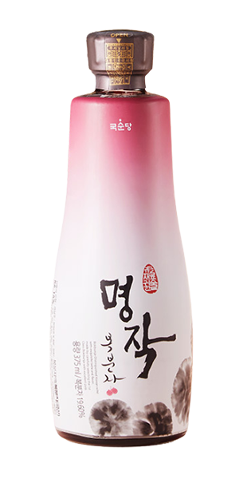
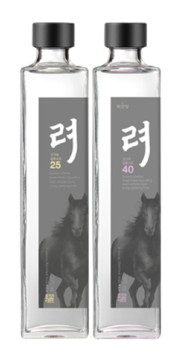
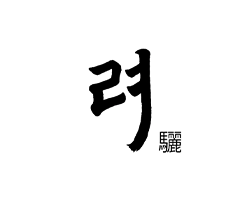
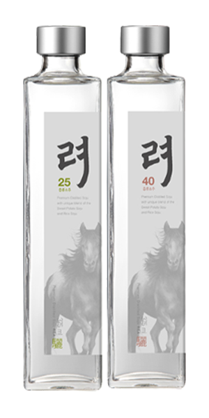

> 제품소개 > 계열사 제품
계열사 제품
기업과 지역이 '1사 1촌' 결연을 맺고
함께 성장하며 농가 소득 증대 및 지역경제를 활성화합니다.
-

명작 복분자
- 귀한재료 귀한 술
유네스코 생물권 보전지역 고창에서 만들어진 1등급 복분자
- 귀한재료 귀한 술
- 명작 복분자 명작 복분자는 국내산 1등급 복분자(10브릭스 이상)만 엄선하여 맛이 진하고, 복분자 과즙 상태로 장기보관 생산하는것이 아니라 필요량 만큼 천연과실 상태로 발효생산하여 맛이 신선합니다.
- 새로운 디자인으로 품질을 더하다
- 첨성대를 모티브로 우리 전통 곡선의 미(美)를 살린 술병은 품격을 한층 높여줍니다
- 용량
- 375ml
- 도수
- 13도
- 원료
- 복분자(국내산)
-

려驪 고구마증류소주
- 100% 여주산 고구마
고구마 100% 원액 그대로 담아 더 깊고 응축된 리얼 고구마 증류소주
- 1년의 기다림을 담는다
- 매년 초가을, 신선한 여주산 고구마중 좋은 고구마를 사용하여 재료 본연의 기운을 오롯이 담습니다.
- 재료의 풍미를 살리다
- 깊은 풍미의 여주산 고구마는 상압증류, 부드러운 감칠맛의 여주 쌀은 감압증류로 원재료가 지닌 깊이감은 끌어냅니다.
- 용량
- 75ml, 375ml, 500ml
- 도수
- 25도, 40도
- 원료
- 여주산 고구마 증류원액(국내산)
- 숙성
- 옹기숙성
-

려驪 증류소주
- 여주산 고구마와 쌀
고구마와 쌀 원액을 블렌딩하여 조화로운 맛의 증류소주
- 1년의 기다림을 담는다
- 매년 초가을, 신선한 여주산 고구마중 좋은 고구마를 사용하여 재료 본연의 기운을 오롯이 담습니다.
- 재료의 풍미를 살리다
- 깊은 풍미의 여주산 고구마는 상압증류, 부드러운 감칠맛의 여주 쌀은 감압증류로 원재료가 지닌 깊이감은 끌어냅니다.
- 용량
- 75ml, 375ml, 500ml
- 도수
- 25도, 40도
- 원료
- 여주산 고구마, 쌀 증류원액(국내산)
- 숙성
- 옹기숙성